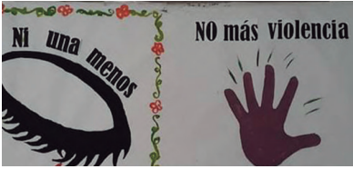
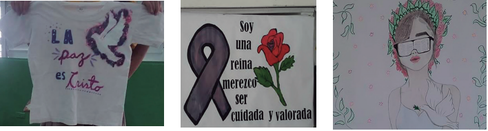

<!doctype html>
<html lang="es">
<head>
<link rel="stylesheet" type="text/css" href="base.css" />
<link rel="stylesheet" type="text/css" href="content.css" />
<link rel="stylesheet" type="text/css" href="nav.css" />
<meta http-equiv="content-type" content="text/html;  charset=utf-8" />
<title>Tema 2: Me comunico con dibujos | Educación Artística, 1° grado del nive secundario </title>
<link rel="shortcut icon" href="favicon.ico" type="image/x-icon" />
<meta name="author" content="Prof. Joe Mena" />
<meta name="generator" content="eXeLearning 2.9 - exelearning.net" />
<!--[if lt IE 9]><script type="text/javascript" src="exe_html5.js"></script><![endif]-->
<script type="text/javascript" src="exe_jquery.js"></script>
<script type="text/javascript" src="common_i18n.js"></script>
<script type="text/javascript" src="common.js"></script>
<meta name="viewport" content="width=device-width, initial-scale=1" />
</head>
<body class="exe-web-site" id="exe-node-4"><script type="text/javascript">document.body.className+=" js"</script>
<div id="content">
<p id="skipNav"><a href="#main" class="sr-av">Saltar la navegación</a></p>
<header id="header" ><div id="headerContent">Educación Artística, 1° grado del nive secundario</div></header>
<nav id="siteNav">
<ul>
   <li><a href="index.html" class="daddy main-node">EDUCACION ARTISTICA</a></li>
   <li class="current-page-parent"><a href="unidad_1_artes_visuales.html" class="current-page-parent daddy">UNIDAD 1, Artes Visuales</a>
   <ul>
      <li><a href="tema_1_pintando_la_vida_darle_forma_a_la_vida_a_travs_de__un_dibujo.html" class="no-ch">Tema 1: Pintando la vida. Darle forma a la vida a través de  un dibujo</a></li>
      <li id="active"><a href="tema_2_me_comunico_con_dibujos.html" class="active no-ch">Tema 2: Me comunico con dibujos</a></li>
      <li><a href="tema_3_inventario_visual_una_mirada_formal_e_iconogrfica.html" class="no-ch">Tema 3: Inventario visual, una mirada formal e iconográfica.</a></li>
      <li><a href="tema_4_crear_obras_de_arte_usando_la_tcnica_del_dibujo_y__del_uso_del_claroscuro.html" class="no-ch">Tema 4: Crear obras de arte usando la técnica del dibujo y  del uso del claroscuro</a></li>
      <li><a href="tema_5_la_mitad_de_mi_cara_en_escala_de_grises.html" class="no-ch">Tema 5: La mitad de mi cara en escala de grises</a></li>
      <li><a href="tema_6_prctica_de_textura_visual.html" class="no-ch">Tema 6: Práctica de textura visual</a></li>
      <li><a href="tema_7_descubriendo_colores_mgicos.html" class="no-ch">Tema 7: Descubriendo Colores Mágicos</a></li>
      <li><a href="tema_8_creando_un_crculo_cromtico.html" class="no-ch">Tema 8: Creando un círculo cromático</a></li>
   </ul>
   </li>
   <li><a href="unidad_2_artes_escnicas.html" class="daddy">UNIDAD 2: Artes Escénicas</a>
   <ul class="other-section">
      <li><a href="el_cuerpo_como_generador_de_movimiento.html" class="no-ch">El cuerpo como generador de movimiento</a></li>
      <li><a href="el_cuerpo_genera_lenguajes_artsticos_en_el_teatro_gestos_palabras_y_acciones.html" class="no-ch">El cuerpo genera lenguajes artísticos en el teatro: gestos, palabras y acciones</a></li>
   </ul>
   </li>
   <li><a href="unidad_3_educacin_musical.html" class="daddy">UNIDAD 3: Educación Musical</a>
   <ul class="other-section">
      <li><a href="seccin_las_primeras_notas.html" class="no-ch">Sección: Las primeras notas</a></li>
      <li><a href="seccin_melodas_frases_semifrases_y_motivo.html" class="no-ch">Sección: Melodías, frases, semifrases y motivo</a></li>
      <li><a href="seccin_con_mi_flauta_repite_despus_de_mi.html" class="no-ch">Sección: Con mi flauta, repite después de mi</a></li>
      <li><a href="seccin_preparemos_el_edificio.html" class="no-ch">Sección: Preparemos el edificio</a></li>
   </ul>
   </li>
   <li><a href="unidad_4_artes_aplicadas.html" class="daddy">UNIDAD 4: Artes Aplicadas</a>
   <ul class="other-section">
      <li><a href="disea_tu_propio_cartel_visual.html" class="no-ch">Diseña tu propio cartel visual</a></li>
      <li><a href="diseo_textil.html" class="no-ch">Diseño textil</a></li>
      <li><a href="creo_y_diseo_mi_bolso_reciclado.html" class="no-ch">Creo y diseño mi bolso reciclado</a></li>
      <li><a href="crear_una_mueca_sin_rostro_de_papel_mach.html" class="no-ch">Crear una muñeca sin rostro de papel maché</a></li>
      <li><a href="diario_artstico.html" class="no-ch">Diario artístico</a></li>
   </ul>
   </li>
</ul>
</nav>
<div id='topPagination'>
<nav class="pagination noprt">
<a href="tema_1_pintando_la_vida_darle_forma_a_la_vida_a_travs_de__un_dibujo.html" class="prev"><span><span>&laquo; </span>Anterior</span></a> <span class="sep">| </span><a href="tema_3_inventario_visual_una_mirada_formal_e_iconogrfica.html" class="next"><span>Siguiente<span> &raquo;</span></span></a>
</nav>
</div>
<div id="main-wrapper">
<section id="main">
<header id="nodeDecoration"><h1 id="nodeTitle">Tema 2: Me comunico con dibujos</h1></header>
<article class="iDevice_wrapper FreeTextIdevice" id="id16">
<div class="iDevice emphasis0">
<div id="ta16_85" class="block iDevice_content">
<p></p>
<figure class="exe-figure exe-image float-left license-custom" style="width: 300px;">
<figcaption class="figcaption"></figcaption>
</figure>
<p>■ ¿Qué vas a hacer?<br />Elaborar y comunicar un mensaje, acerca de una preocupación, sentimiento o vivencia que hayas tenido.<br />■ ¿Por qué lo vas a hacer?<br />Es importante expresar nuestros sentimientos. Y para esto podemos comunicarnos a través de símbolos y colores utilizados en los dibujos.<br />■ ¿Qué necesitas para hacerlo?<br />Cajas de cartón, papelógrafo, cartulina, silicón, tijera, reglas, pintura, lápiz, borrador, lápices de color, cuaderno, cinta adhesiva entre otros materiales que consideres necesarios para dicho trabajo.<br />■ ¿Cómo lo vas a hacer?<br />– Selecciona un tema motivado por una situación que hayas vivido.<br />– Realiza un boceto en tu cuaderno sobre la obra que vas a presentar. <br />– Luego de hacer tu boceto, procede a realizar tu dibujo o pintura.<br />– Busca una caja de cartón y córtala con la forma que deseas, puede ser circular, rectangular o cuadrada.<br />– Cubre el cartón con un papelógrafo o cartulina, pegando con cuidado, utilizando silicón o cinta adhesiva.</p>
<p>■ ¿Para qué te sirve lo que acabas de hacer?<br />Para expresar sentimientos, preocupaciones y comunicar a través de la obra. <br />– ¿Cómo te sentiste con la actividad que realizaste?<br />– ¿Qué aprendiste?<br />– ¿Podrías usar lo aprendido en la actividad en alguna situación de tu vida?</p>
</div>
</div>
</article>
<article class="iDevice_wrapper activityIdevice em_iDevice em_iDevice_activity" id="id17">
<div class="iDevice emphasis1" >
<header class="iDevice_header"><h1 class="iDeviceTitle">Actividad</h1></header>
<div class="iDevice_inner">
<div class="iDevice_content_wrapper">
<div id="ta17_129_2" class="block iDevice_content">
<p><strong> Actividad opcional</strong><br />– Seleccionen los enunciados que colocarian serigrafiados en una camiseta para regalar al maestro, maestra, directora de su centro escolar.<br />– Justifiquen su selección con argumentos necesarios.</p>
<div class="exe-layout-3-cols exe-clear">
<div class="exe-col exe-col-1">
<p><strong>Frases graciosas y divertidas</strong><br />– Lo que no nos mata nos hace más fuertes.<br />– Ya sabían cómo me pongo, no sé para que me invitan.<br />– Como quisiera ser feo para saber que se siente.<br />– El físico atrae, pero ser ingeniero enamora.<br />– Los guapos no utilizamos filtro.<br />– Al buen pan, buen vino<br />– Soy la reina de la fiesta<br />– Yo ordeno y tú pagas ¿aceptas?..</p>
</div>
<div class="exe-col exe-col-2">
<p><strong>Frases para personas positivas</strong><br />– La vida comienza cada 5 minutos.<br />– Siempre hay razones para vivir<br />– EL significado de la vida es asombroso.<br />– La felicidad no es suerte, la creamos nosotros.<br />– La paciencia es una virtud<br />– Hoy es un buen día para sonreír.<br />– Cuando existan 1000 motivos para llorar, existirán 1000 más para sonreír..</p>
</div>
<div class="exe-col exe-col-3">
<p><strong>Frases para reuniones familiares</strong><br />– Una familia unida es una. familia feliz.<br />– Mi madre es mi mejor regalo.<br />– La familia es primero.<br />– Una buena familia proviene. del ejemplo de excelentes.<br />– Si tengo un accidente, por favor no llamen a mi suegra..</p>
</div>
</div>
</div>
</div>
</div>
</div>
</article>
<div id="packageLicense" class="other-free-software">
<p><span>Licencia: </span> otras licencias de software libres</p>
</div>
</section>
</div>
<div id='bottomPagination'>
<nav class="pagination noprt">
<a href="tema_1_pintando_la_vida_darle_forma_a_la_vida_a_travs_de__un_dibujo.html" class="prev"><span><span>&laquo; </span>Anterior</span></a> <span class="sep">| </span><a href="tema_3_inventario_visual_una_mirada_formal_e_iconogrfica.html" class="next"><span>Siguiente<span> &raquo;</span></span></a>
</nav>
</div>
</div>
<p id="made-with-eXe"><a href="https://exelearning.net/" target="_blank" rel="noopener"><span>Creado con eXeLearning<span> (Ventana nueva)</span></span></a></p><script type="text/javascript" src="_style_js.js"></script></body></html>